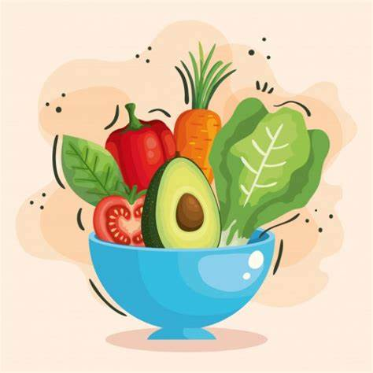

What are health and nutrition?
Nutrition is a critical aspect of health and development. Good nutrition is related to the well-being of children and mothers, as well as older adults: stronger immune systems, safer pregnancies and childbirth, and reduced risks of non-communicable diseases such as diabetes and cardiovascular diseases.
What is nutrition?
It is the biological process that occurs in a living organism when its body absorbs, from food and liquids, the nutrients it needs for its growth and the development of vital functions. Through nutrition, the body incorporates carbohydrates, vitamins, minerals, proteins, and fats.

Human beings consume different types of food, and after physical and chemical processes, the body absorbs the nutrients from these foods and converts them into energy to perform its main functions, such as movement, reproduction, and growth. A good and varied diet supports the proper functioning of the body, and to achieve that, various types of foods that provide different nutrients should be included in meals.
What is health?
Health is the condition of all living beings that enjoy absolute well-being both physically and mentally, according to the definition of the World Health Organization (WHO). This means that the concept of health not only involves the absence of diseases or ailments but goes beyond that. In other words, the idea of health can be explained as the degree of efficiency of metabolism and functions of a living being on both micro (cellular) and macro (social) scales.
Life style, or the set of habits and customs that a person possesses, can be beneficial for health, but it can also damage it or negatively influence it. An individual who maintains a balanced diet, takes care of their nutrition, and engages in physical activities regularly is more likely to enjoy good health. Conversely, a person who overeats and drinks, lacks proper rest, smokes, and neglects hygiene, is at serious risk of suffering from avoidable diseases.

HEALTH/NUTRITION
Informative articles for wellness in health and proper nutrition care available on our menu.
ABOUT US
This page was developed for the well-being of individuals who wish to improve their eating habits.
INFORMATION OBTAINED
We gather information from various sources, including other websites of similar nature. The links to these pages are available in the menu.
Follow us on:
.png)
.png)
.png)